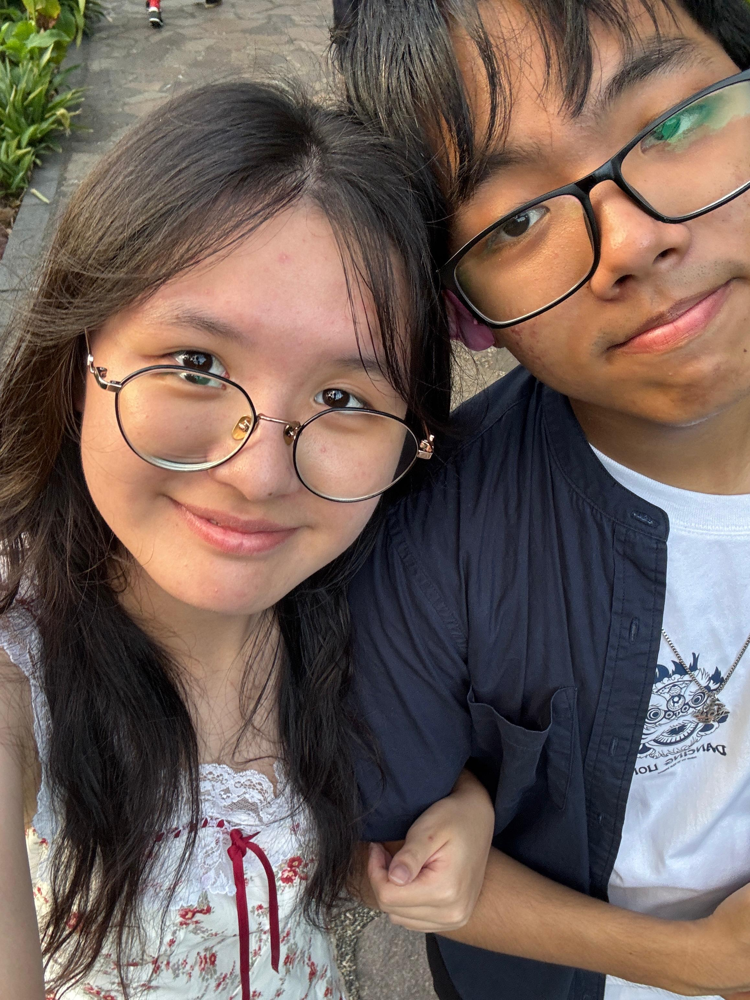
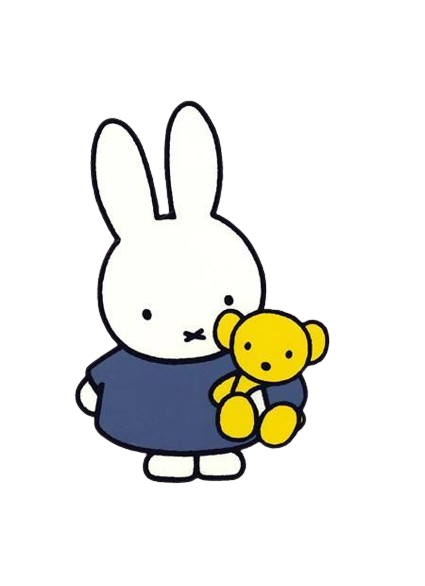
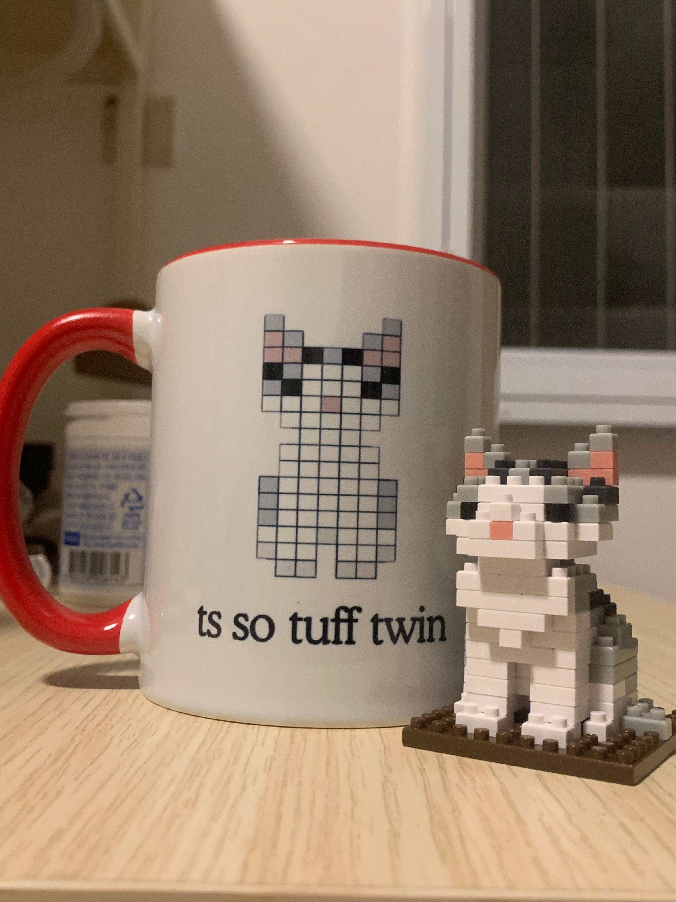
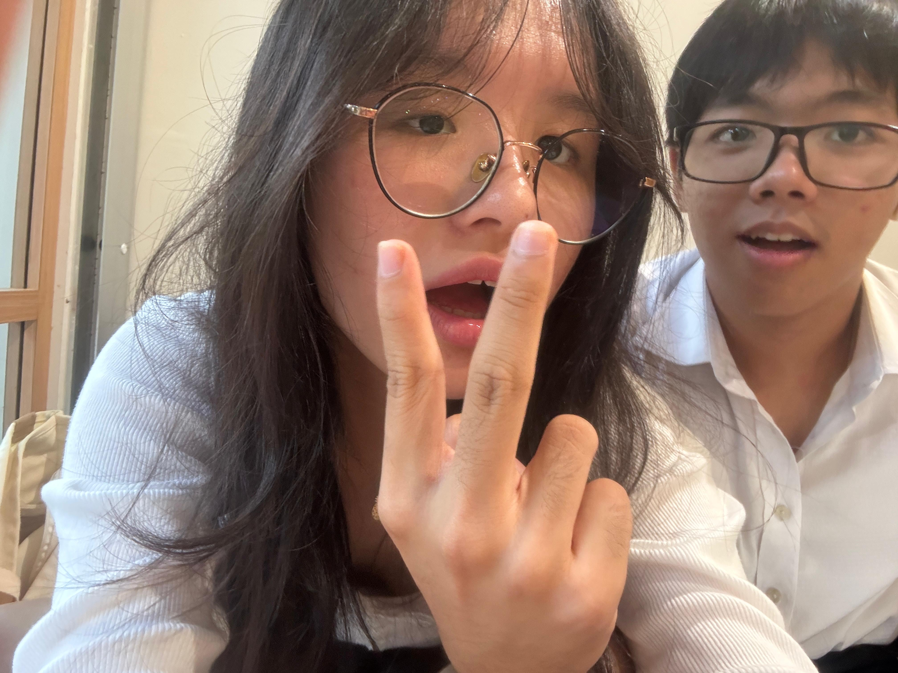
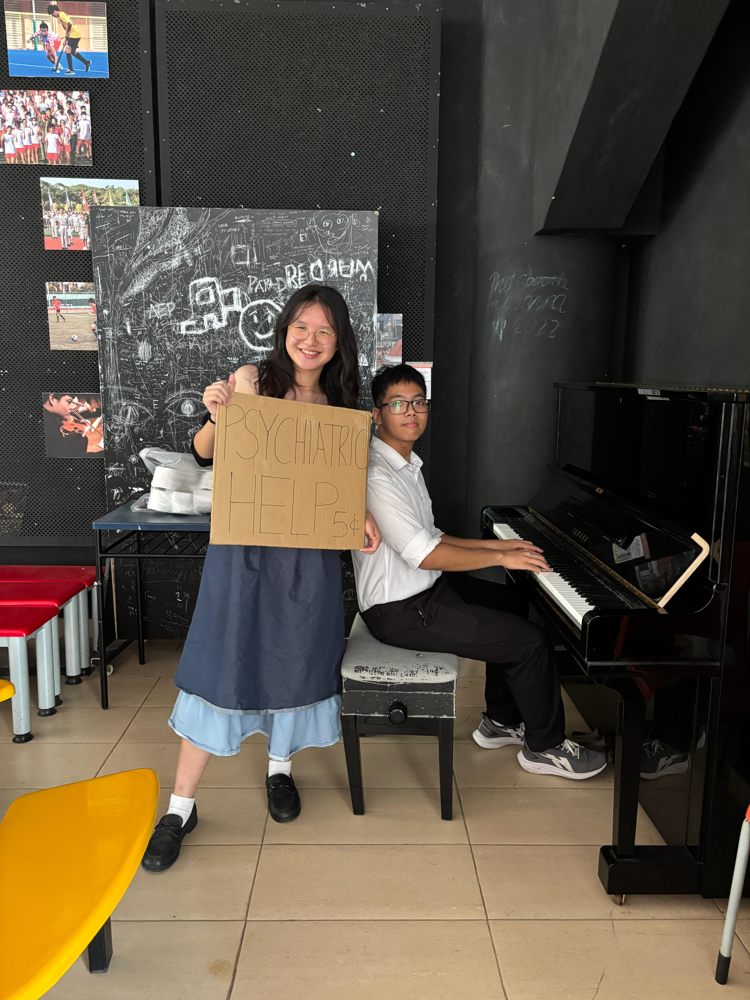
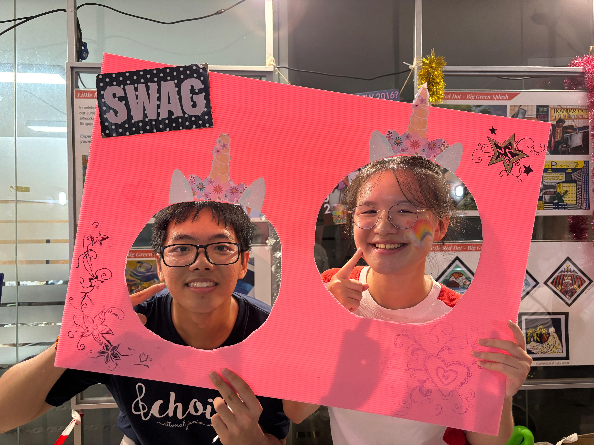
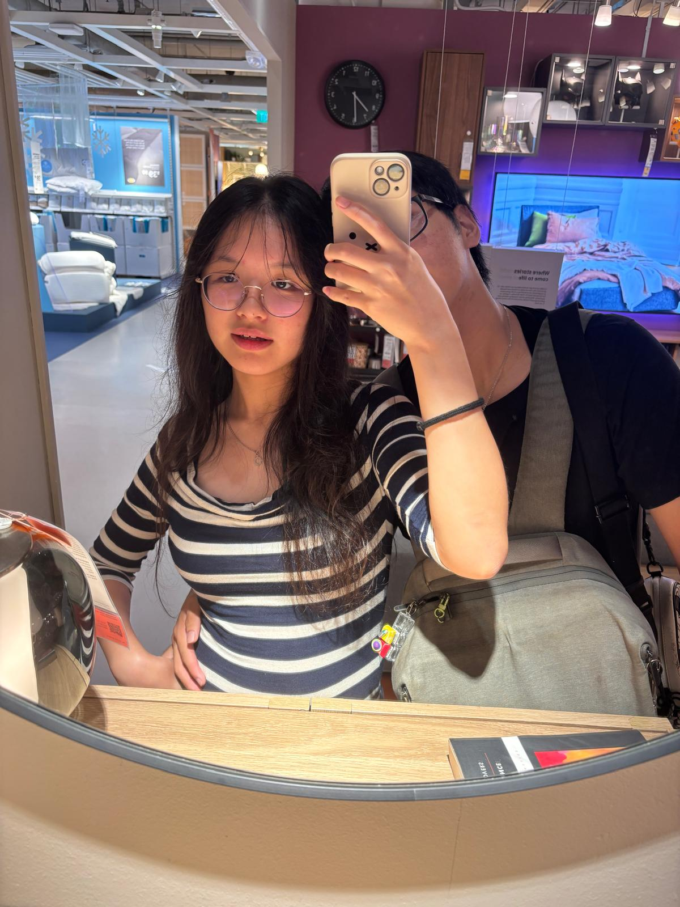
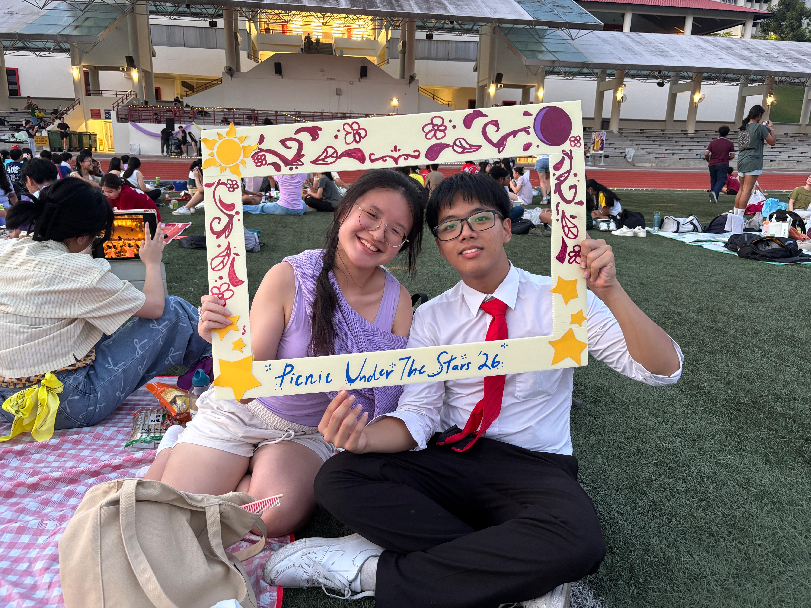
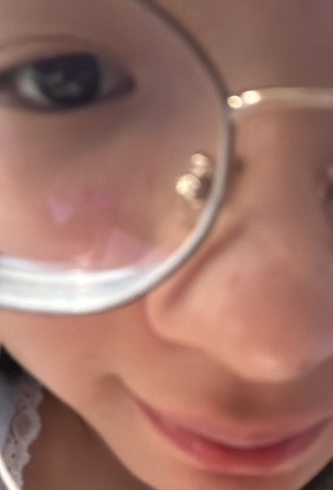
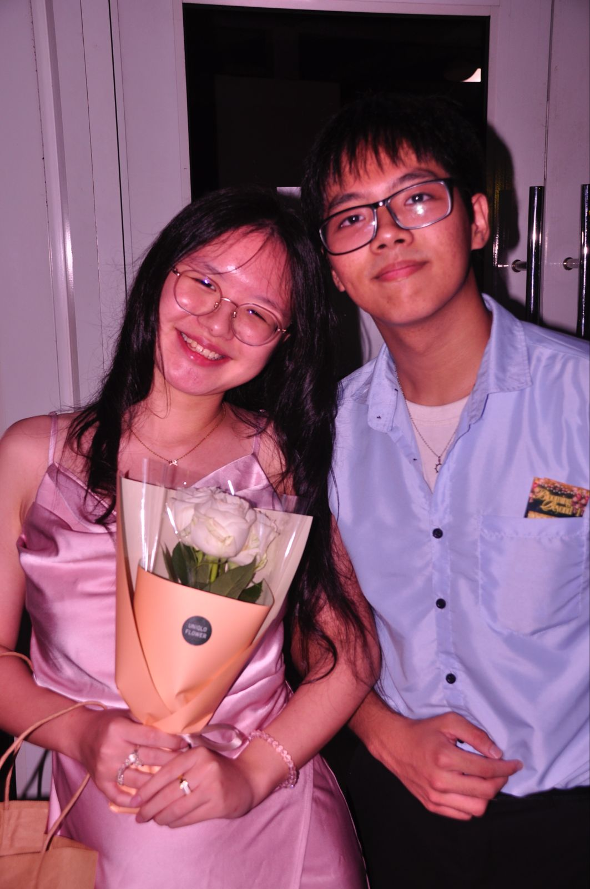

our first date ♡

I MADE A LITTLE SOMETHING FOR YOU
I made this just for you. Filled with memories and little things that I hope will make you smile.
open your little gift ♡take your time, there's lots to see ✿
my special love letter
You know, it's kind of funny when I think about it.
Who would've thought that a little cat mug would end up meaning so much?
I still remember when you gave it to me at the end of last year. I don't think either of us could have imagined what would eventually come out of something so small.
I guess that's one of the things I like about us. When I think about all the memories we've made, it's not necessarily the big occasions that come to mind first. It's all the little things.
Like how you somehow manage to cry at practically every movie or show we watch together. I still remember watching Spider-Man: No Way Home with you on the day we brought Calvin out. I wonder how many more movies we'll have to watch before you finally stop crying at every single one.
And of course, your little bleh face. The way you randomly stick your tongue out. I don't think you realise how cute and funny it is, but it's one of those little things I can picture so clearly whenever I think about you.
I also remember our steak dinner. It's funny because when I think back on it, I remember the atmosphere and the time we spent together more than anything else. I think that's something I've come to appreciate a lot. It doesn't always take something extraordinary to make a day memorable. Sometimes, it's simply having someone you enjoy being around.
And I definitely haven't forgotten how you ask for my opinion, only to proceed to do something completely different anyway. At this point, I'm starting to wonder whether you actually want my opinion or whether you just want someone to listen to your plans.
I think these are the things I'll miss most when we're no longer able to see each other as often. Not just our outings or special dates, but the simple fact that you're physically there. Being able to see you, talk to you, go somewhere together, or just spend time doing absolutely nothing in particular. I don't think those things are as ordinary as they seem.
But I don't want this to sound like a goodbye. Because it isn't.
We still have so many things to look forward to. Our calls, random conversations, working together, virtual dates, and all the little things we'll come up with along the way. It might take a little more effort to spend time together, but that doesn't mean we have to stop making memories.
I hope that whenever you look back at this silly website, you remember not just the big moments, but all the small, cute ones too. And maybe, you'll remember where all of this started too, a small little cat mug.
Thank you for being you. Even when you're crying at another movie, sticking your tongue out, or ignoring my perfectly reasonable advice. ♡

Moments I wanted us to remember. One for each month we've spent together

our first date ♡

monday coffee bar

snoopy day!! ✿

ur funtasia booth :P

our random ikea date

me sneaking into your picnic :>

my fav photobooth pic

my favorite pic

this some grammys awards pic

waiting...
more little memories to come...
little memories
Get ready to take some cute picturesss You'll have four chances to strike a pose.
A poor cs student's solace studio
PHOTO 1 OF 4
Get ready for your first photo!
ONE LAST THING
There's something waiting for you...
I have a crush on youuuuuu....
Will you go out with meeee?